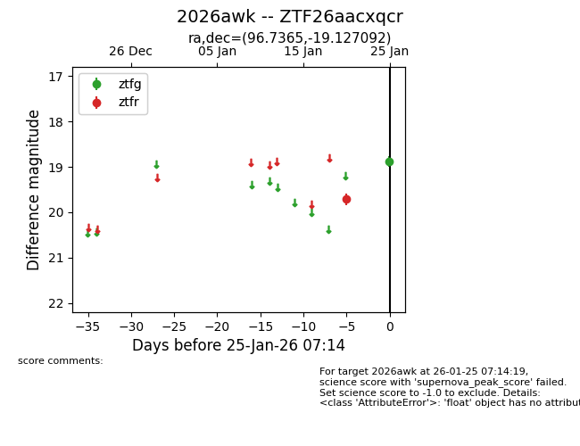
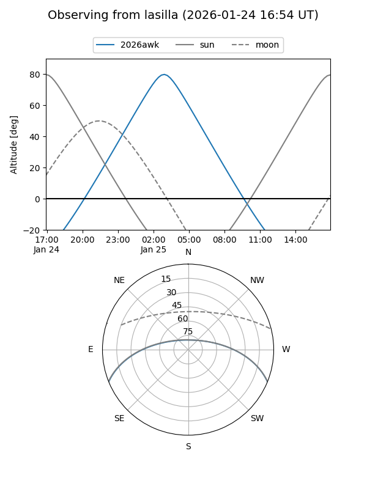
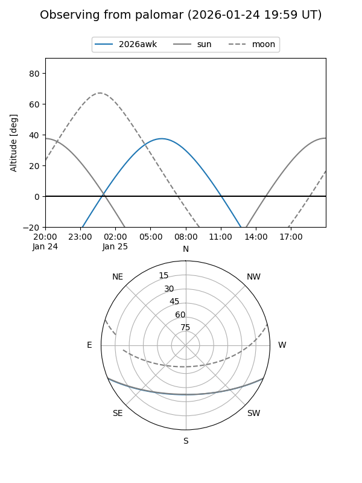
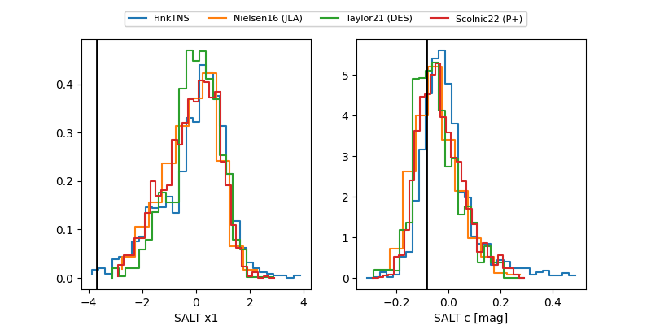

2026awk
Target 2026awk at 2026-01-25 07:16
Aliases and brokers:
FINK: link
Lasair: link
ALeRCE: link
TNS: link
YSE: link
alt names
ZTF26aacxqcr (ztf,fink_ztf)
2026awk (tns,yse)
Coordinates:
equatorial (ra, dec) = 96.7365,-19.12709
equatorial (HMS+DMS) = 06:26:56.76,-19:07:37.53
galactic (l, b) = (227.5873,-13.83332)
Flags:
Photometry:
last ztfg=18.89, ztfr=19.71
1 ztfg, 1 ztfr detections
Lightcurve

Visibility


Additional plots
